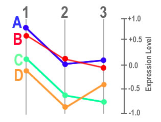
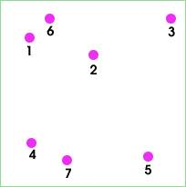
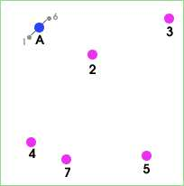
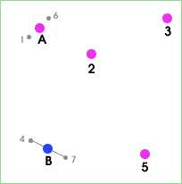
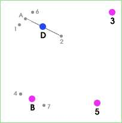
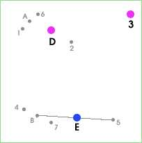
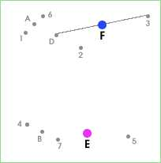
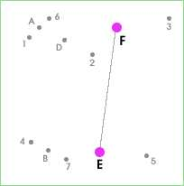
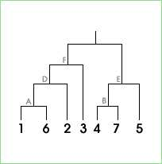

The Super Grouper organises Spots into groups based on their similarity of their expression profiles. Hierarchical clustering can then be applied within the groups.
The basic idea of the Super Grouper is to partition spots into groups whereby all Spots in one group have similar expression profiles.
Each group has a "target profile". The expression profile of each Spot is checked against all of the target profiles, and the Spot is put into the group with the most similar target profile.
The target profiles can be adjusted by hand, or the "Auto adjust" can be used feature to iteraratively tweak the profiles.
The main controls for the Super Grouper are in the panel on the left-hand side of the window.
The top portion of this panel contains a list of Measurements. Select two or more Measurements for inclusion in the profile.
The bottom portion of this panel is divided into four sections:
The similarity metric is the calculation that is used to quantify the similarity between two profiles. Three different metrics are supported in this plugin:
| Distance: | the sum of the squared differences between values |
| Slope: | the sum of the differences between the first derivatives of the values |
| Direction: | a score generated by comparing direction changes |
The three metrics are illustrated in the following example in which there are 4 spots (A,B,C and D) with values in 3 Measurements (1,2 and 3):
|
 |
Using the Distance metric, spots A and B are most similar. This is because the sum of of the absolute differences between corresponding pairs of values is smallest for these two profiles.
Formally:
distance_metric(A, B) = abs(A1 - B1) + abs(A2 - B2) + abs(A3 - B3)
distance_metric(A, C) = abs(A1 - C1) + abs(A2 - C2) + abs(A3 - C3)
.....
where abs() is the absolute function: abs(-X) = X
With the Slope metric, spots A and C are most similar. This metric calculates the sum of the differences of the first derivatives of the values, i.e. the slopes of the two line segments (the one joining Measurements 1 and 2 and the other one joining Measurements 2 and 3). The profile with the smallest sum is regarded as the most similar.
Formally:
slope_metric(A, B) = abs( (A2-A1) - (B2-B1) ) + abs( (A3-A2) - (B3-B3) )
slope_metric(A, C) = abs( (A2-A1) - (C2-C1) ) + abs( (A3-A2) - (C3-C3) )
.....
This metric therefore chooses lines which have similar (but not neccessarily identical) behaviours in terms of the changes between Measurements
The final metric, Direction compares only the direction of the slopes of the lines joining the Measurements. A 'score' is generated by comparing each pair of line segments, if they go in different directions then 1 is added to the score. The most similar profile is the ones with the lowest score. In the above example, spots A and D are the most similar because they both go "down, up" (spots C and B both go "down,down").
Groups are collections of Spots which have similar profiles. Each group has a 'candidate profile'. Spots are allocated to groups by comparing their profiles with each of the candidate profiles (using the similarity metric) and then choosing the candidate which is most similar.
The buttons in the Groups palette are used to control how many groups are required and to provide initial candidate profiles for these groups.
A specific number of groups can be requested using the type-in field. Enter a number and press "Set" to initialise the groups. Any number of groups can be used, although very large numbers will be time and memory consuming.
The "Use Spot selection" button initialises the groups using the currently selected Spots. Each Spot in the selection will become the candidate profile for a group. This is useful if you have previously identified some candiate profiles.
The "Permutations" button initialises the groups so that all possible permutations of the basic profile shapes are represented. If for example, there are 3 Measurments selected then there are 8 (3 to the power of 3) possible permutations of the profile, namely: "up,up,up", "up,up,flat", "up,up,down", "up,flat,up", "up,flat,flat" and so on.
The "Randomise" button randomly allocates new candicate profiles to each of the current groups.
The "Remove Empty" button deletes any groups which currently have no Spot profiles assigned to them.
The "Apply filter" option controls whether any currently enabled Filters are used to restrict the number of Spots that will be grouped.
The "Edit profiles" option enables interactive editing of the candidate profiles. When this option is active the mouse can be used to drag the individual points on the candidate profiles up and down the axis. After each adjustment, the Spots will be automatically regrouped.
Auto-adjust mode is an interative process in which the candiate profiles are repeatedly altered and the Spots re-allocated to groups. A variety of different rules can be employed to control how the profiles are adjusted.
The "Enable" switch turns auto-adjust mode on and off. When it is on, a count of how many iterations have been done is displayed next to the switch. Note that in order to improve performance, the display is only updated every two seconds, not every interation.
Two drop-down menus control the main aspects of auto-adjust mode:
1. Which group(s) to adjust:
| Smallest: | adjust the group with the fewest Spots |
| Biggest: | adjust the group with the most Spots |
| Best: | adjust the group with the best fit (the least difference between profiles) |
| Worst: | adjust the group with the worst fit (the biggest difference between profiles) |
| Random: | adjust a randomly chosen group |
| All: | adjust all groups |
2. How the profile(s) in the chosen groups(s) are altered:
| Mean: | adjust the candidate profile towards the mean profiles for all spots in the group |
| Mean Spot: | adjust the candidate profile towards the that of the most average spot in the group |
| Random: | randomly adjust the candidate profile |
The "Rate" slider controls the amount by which the candiate profiles are adjusted. Bigger values lead to greater alteration of the profiles.
The "Noise" slider allows an amount of random noise to be introduced into the candiate profile of the group(s) chosen for adjustment. Adding noise can be useful as it prevents the allocation of spots to groups from becoming 'stuck' in one particular configuration.
When "Auto remove empty" option is selected then groups which become empty during the optimisation are discarded.
When the mouse pointer is rested over a Spot profile for a moment, a tool-tip window appears containing an identification label. This label can be any of the Name or Name Attributes in the current data. The choice of which Name or Name Attribute to show is made via the drop-down menu in the control bar along the top of the window.
Click on a profile to add a name label to the plot. Click on the profile again to remove the label. The "Clear all" button removes all name labels that have been added to the plot. The "Label selection" button adds labels to all Spot profiles which are currently in the Spot selection.
The size of the label font can be adjusted using the "a+" and "a-" buttons.
Drag-and-drop can be used to locate particular Spots in the plot. Drag one or more Spots from the main display and drop them into the HyperCube Plot window. This causes the name(s) to appear next to the profiles on the plot. Dropping a Cluster onto the panel causes the names of all Spots in the cluster to be displayed.
The "AutoSpace" option attempts to improve the readability of the graphs by reducing the quantity of displayed labels. When this mode is enabled, labels will only be drawn if there is enough space for them. Note that when there is not a lot of space, or a lot of labels, this mode can lead to some spot labels not being displayed.
Spots which have been selected for labelling can also be displayed in colour to make them more visible. The "Colour" checkbox controls this feature.
The groups can be converted into clusters using one of three methods:
The 'proper' hierarchical clustering algorithm operates by repeatedly finding the two profiles which are closest to one another and then joining them together. The two joined profiles are removed from the group and replaced by their average. This process is repeated until there are no profiles left to join.
As an example, the following images show how the algorithm would proceed in a simple 2D case:
| Initial state | Join 1 & 6 to make A | Join 4 & 7 to make B |
|  |  |  |
| Join A & 2 to make D | Join B & 5 to make E | Join D & 3 to make F |
|  |  |  |
| Join E & F, finished | Resulting cluster tree | |
|  |  |
There are a lot of parameters in the Super Grouper, the best way to find out how they interact is by experimentation.
.....